{kind=link}
{kind=link}
{kind=link}
{kind=link}
{kind=link}
{kind=link}
{kind=link}
{kind=link}
{kind=link}
{kind=link}
{kind=link}
{kind=link}
{kind=link}
{kind=link}
{kind=link}
Frontend
React 19 con Vite y Tailwind CSS 4. React Router para las rutas, Zustand para guardar la OTEC seleccionada, Socket.IO para el tiempo real y SheetJS para leer los archivos Excel en el navegador.
TypeScript · Aplicación web
Plataforma hecha para la empresa ConeXion Process.
Una OTEC es un Organismo Técnico de Capacitación: una empresa que dicta cursos a los trabajadores de otras empresas y entrega un certificado a los alumnos que los aprueban. Esta aplicación web cubre el proceso completo: la cotización del curso a la empresa, el armado del curso, la inscripción de los alumnos, el registro de las asistencias y las notas, la finalización del curso, la entrega de los certificados y el envío de las encuestas de satisfacción.
La aplicación es multiempresa: en una misma instalación pueden convivir varias OTEC, y todas tienen sus propios usuarios, empresas, cursos, logo, certificador y numeración. Las OTEC no pueden ver la información de las demás.
Nota. Los datos de las capturas son inventados: los nombres, los RUT, los correos, las empresas, los cursos y las notas no corresponden a personas ni a empresas reales.
La aplicación tiene cinco roles. Los usuarios pueden tener varios roles a la vez y pertenecer a más de una OTEC; la barra lateral muestra únicamente las secciones que corresponden a sus roles.
ALUMNOPROFESOREMPRESAADMINISTRADOREMPRESAADMINISTRADORLas cuentas no se pueden crear por registro público. Los administradores pueden crear al usuario dentro de la OTEC, y el usuario puede activar su cuenta desde la pantalla de inicio de sesión: escribe su correo, define su contraseña y recibe por correo un enlace de confirmación con fecha de vencimiento. La contraseña se guarda cifrada con bcrypt. Desde la misma pantalla también se puede recuperar la contraseña por correo.
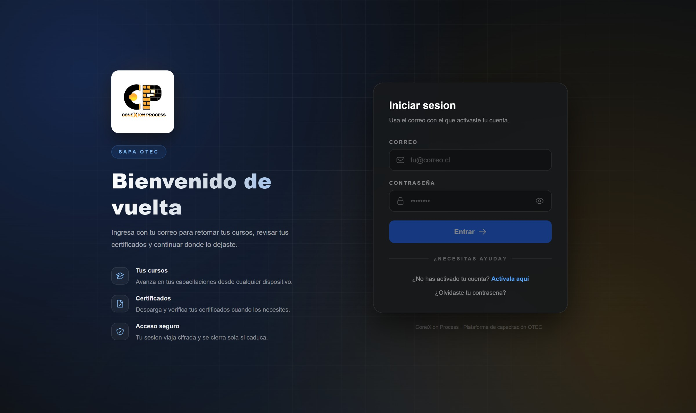
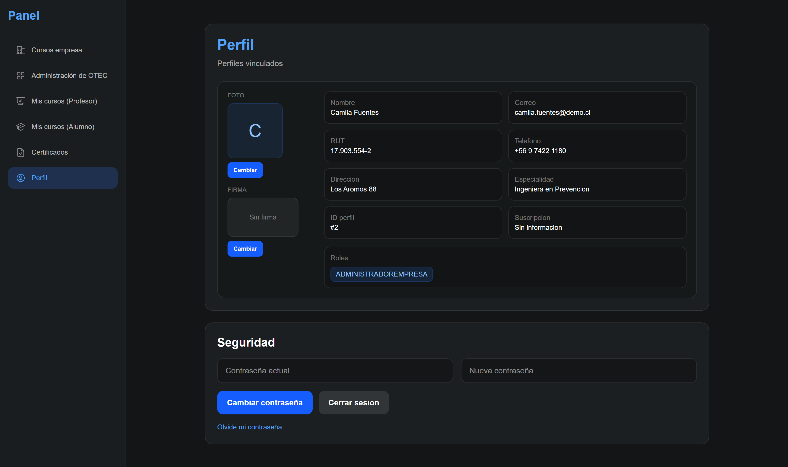
El panel de administración está dividido en seis secciones: Parametros, Gestionar cursos, Usuarios, Empresas, Cursos y Reportes de cursos.
Las tarjetas de esta sección son cursos armados, es decir, cursos del catálogo asignados a una empresa en unas fechas determinadas. La sección tiene un buscador por ID, nombre del curso o nombre de la empresa, catorce criterios de ordenamiento y una selección múltiple que permite eliminar varios cursos armados a la vez. Las tarjetas muestran el estado del curso armado y si está cotizado.
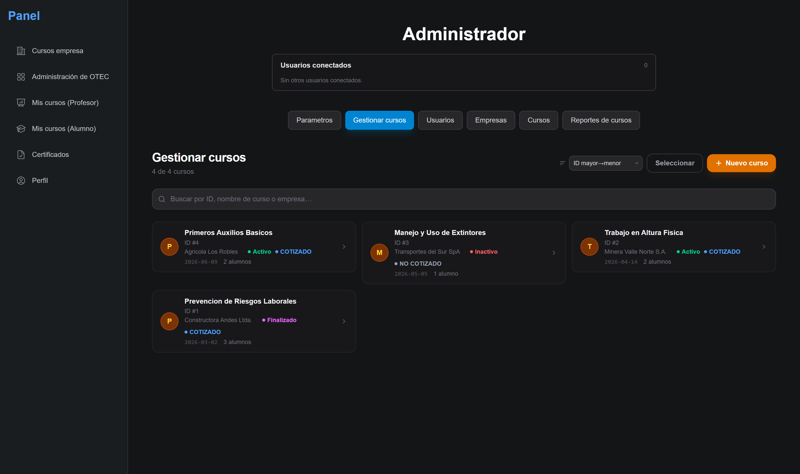
Las tres secciones tienen la misma estructura: buscador, ordenamiento, selección múltiple y un panel lateral para editar el registro seleccionado. Las tres permiten importar registros desde un archivo Excel. Al cargar el archivo, la aplicación lee los encabezados de la primera fila y muestra un selector donde se puede indicar a qué campo corresponde cada columna.
Al terminar la importación, la aplicación muestra un reporte con los registros que no se pudieron crear y el motivo de cada uno, por ejemplo un RUT repetido o una fila sin datos. Los registros válidos del archivo se crean igual.
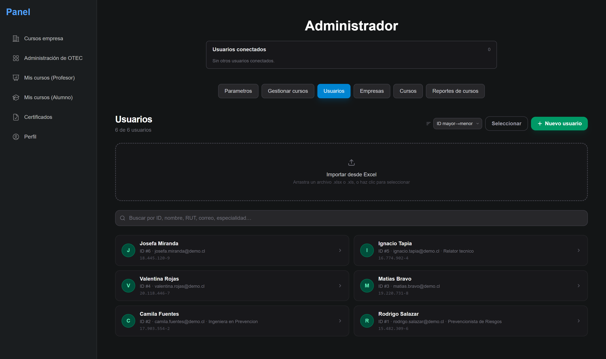
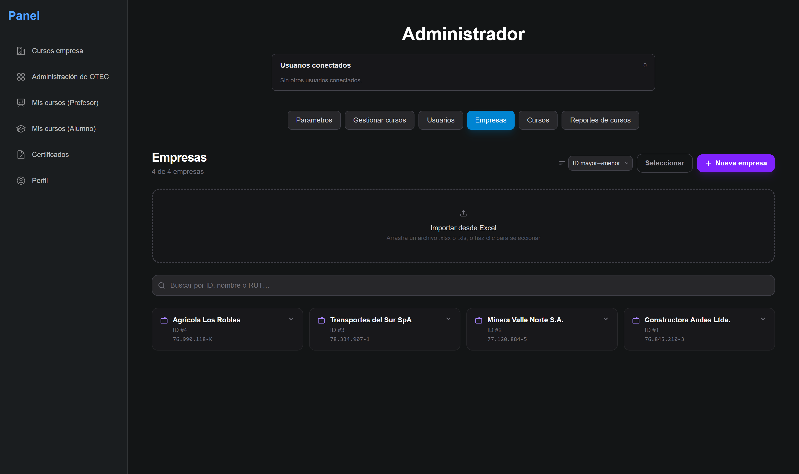
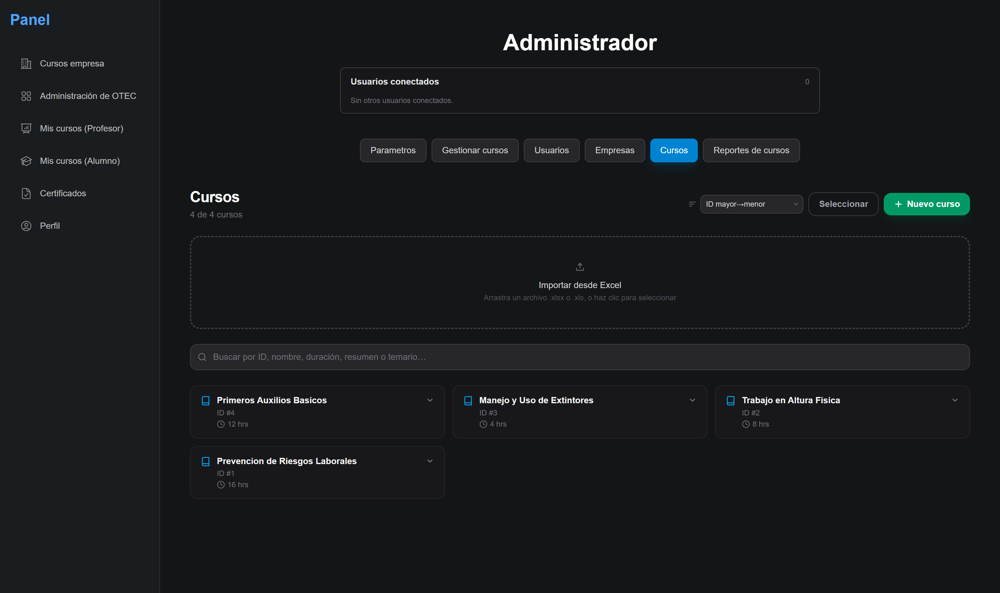
Esta sección muestra todos los cursos armados de la OTEC en una tabla, que se puede filtrar por fecha de inicio, fecha de finalización, estado, si está cotizado, empresa, usuario y curso.
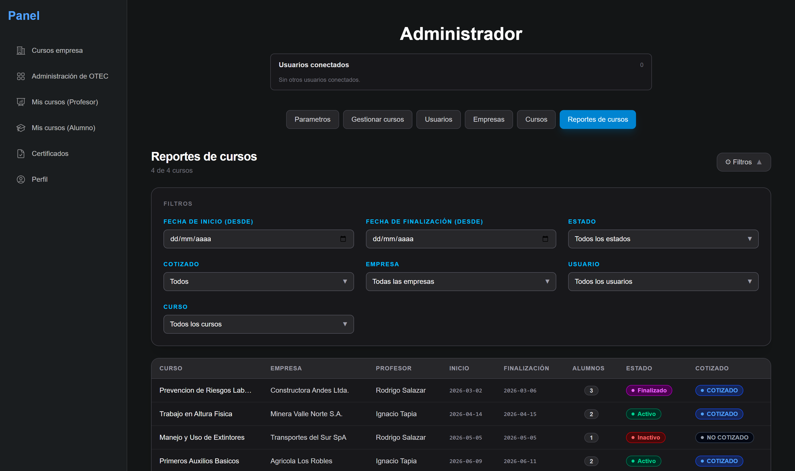
En esta sección se puede configurar lo que distingue a las OTEC: el logo, el usuario que firma los certificados y el número desde el que empiezan los contadores.
El certificador es un usuario de la OTEC. Su nombre, su especialidad y su firma se imprimen en los certificados, y la sección muestra una vista previa de esos tres datos.
Los campos Inicio de contador e Inicio de cotizador indican el último número utilizado. Si el inicio de contador es 100, el siguiente certificado recibe el número 101.
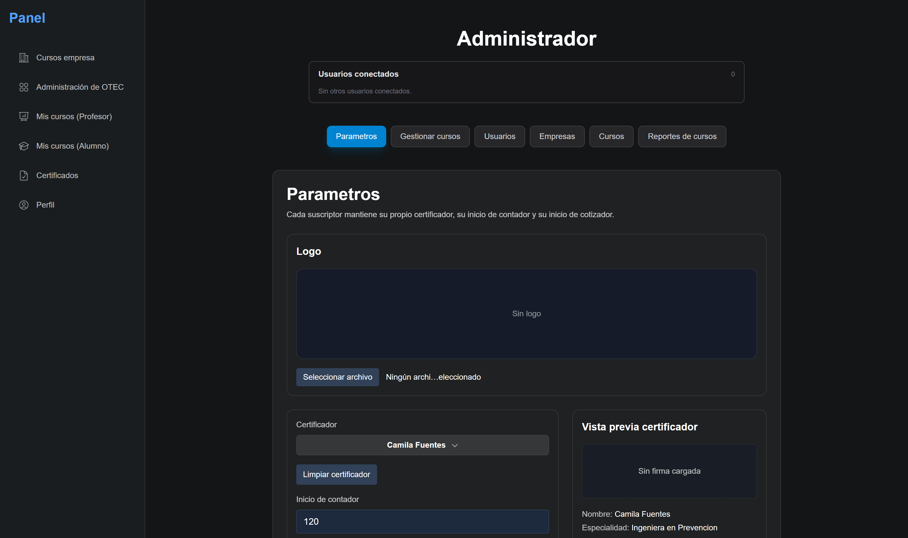
Los cursos armados se pueden abrir desde la sección Gestionar cursos. La aplicación muestra entonces su panel completo, ordenado en las etapas por las que pasa el curso.
Cotización. Este apartado reúne la empresa, el curso del catálogo, el usuario de contacto, el vendedor, la cantidad de alumnos cotizados, el valor unitario y las notas de la cotización.
Las OTEC pueden subir su propia plantilla de cotización en formato
.docx. La aplicación la rellena con los datos del curso
armado, la convierte a PDF con LibreOffice y la envía por correo al usuario de
contacto, con copia al vendedor. La cotización también se puede descargar sin enviarla.
Cada envío aumenta en uno el contador de cotizaciones de la OTEC, de manera que los
números de las cotizaciones no se pueden repetir.
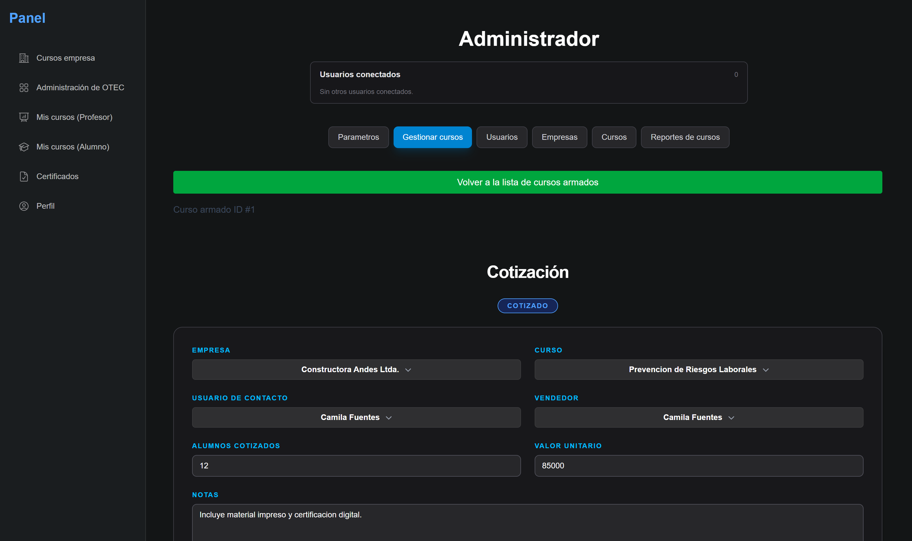
Inicio de curso. Este apartado reúne la fecha de inicio, la fecha de finalización, el profesor, el lugar de realización y las dos notas mínimas de aprobación: la teórica y la práctica.
Estudiantes. Los alumnos se pueden inscribir uno a uno o desde un archivo Excel, con el mismo selector de columnas del resto de la aplicación. Las inscripciones registran las asistencias, la nota práctica y la nota teórica, que se pueden editar directamente en la tabla.
Los campos Asistencias por defecto, Nota práctica por defecto y Nota teórica por defecto definen los valores con los que se crean las inscripciones nuevas.
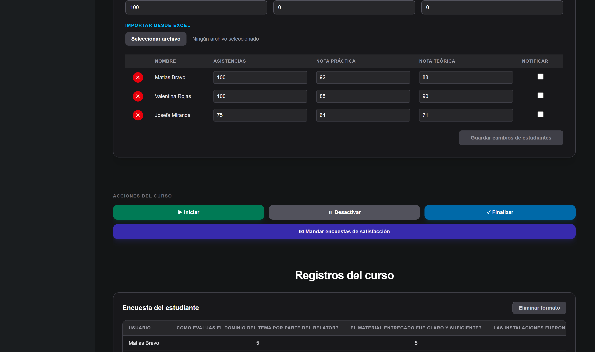
Acciones del curso. Los cursos armados tienen tres estados:
INACTIVO, ACTIVO y
FINALIZADO.
Los cursos armados no se pueden finalizar si les falta la fecha de inicio, la fecha de finalización, el profesor, el curso o la empresa, ni tampoco si alguna inscripción no tiene registradas las asistencias y las dos notas. Estos datos se imprimen en el certificado.
Al finalizar el curso armado, la aplicación asigna los números de certificado correlativos a los alumnos que alcanzaron las dos notas mínimas y envía por correo el enlace del certificado a esos alumnos y a los encargados de la empresa. La asignación de los números se hace dentro de una transacción de la base de datos, de manera que dos cursos armados finalizados al mismo tiempo no puedan asignar el mismo número a dos alumnos distintos.
Registros del curso. Este apartado muestra las respuestas de las dos encuestas de satisfacción y una tabla con las asistencias y las notas de los alumnos. Las tablas calculan la suma y el promedio de sus columnas.
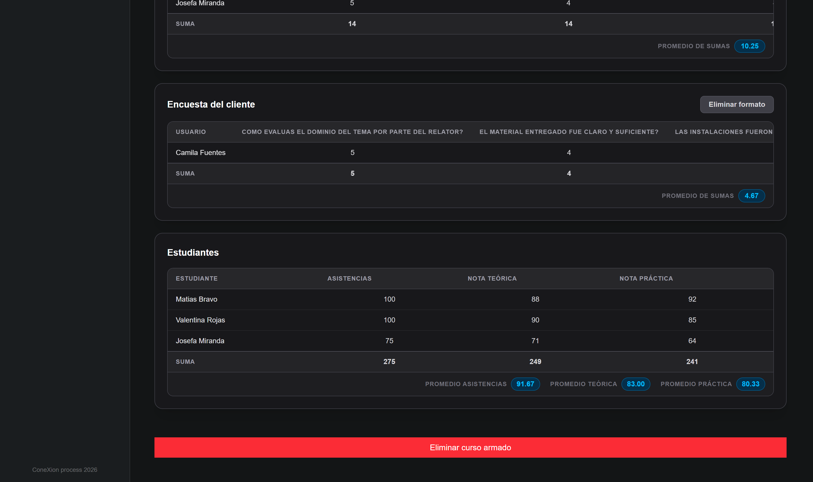
El profesor y el alumno no pueden entrar al panel de administración. Los dos tienen su propia pantalla, con los cursos que les corresponden.
El panel del profesor muestra los cursos armados en los que está asignado como profesor. Desde ahí puede registrar las asistencias y las notas de los alumnos, iniciar y terminar la clase, y finalizar el curso.
El panel del alumno muestra los cursos en los que está inscrito, con su estado, sus fechas, el nombre del profesor y el temario. El botón Marcar asistencia solo se puede usar mientras el profesor mantiene la clase iniciada; cuando el profesor la termina, la aplicación desmarca las asistencias de ese curso armado.
La sección Certificados del alumno lista los cursos que finalizaron y que él aprobó, con un enlace a cada certificado.
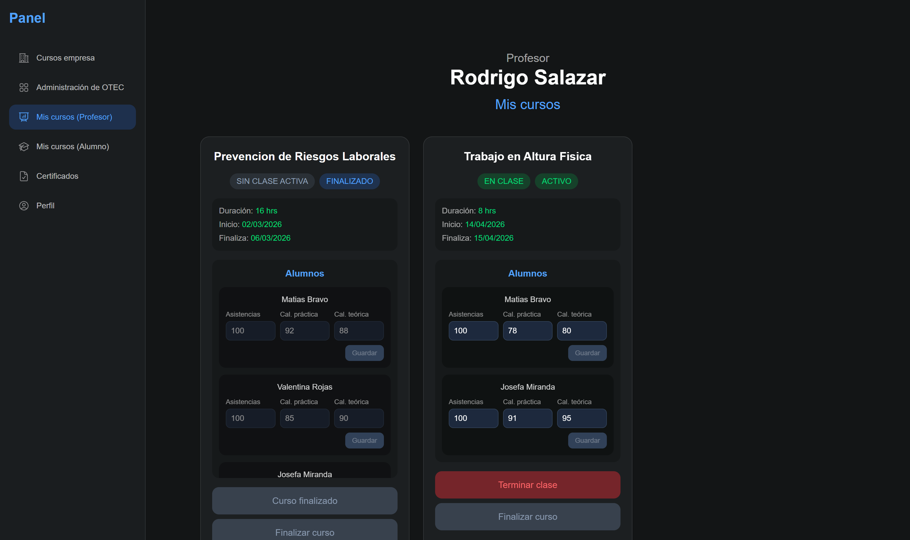
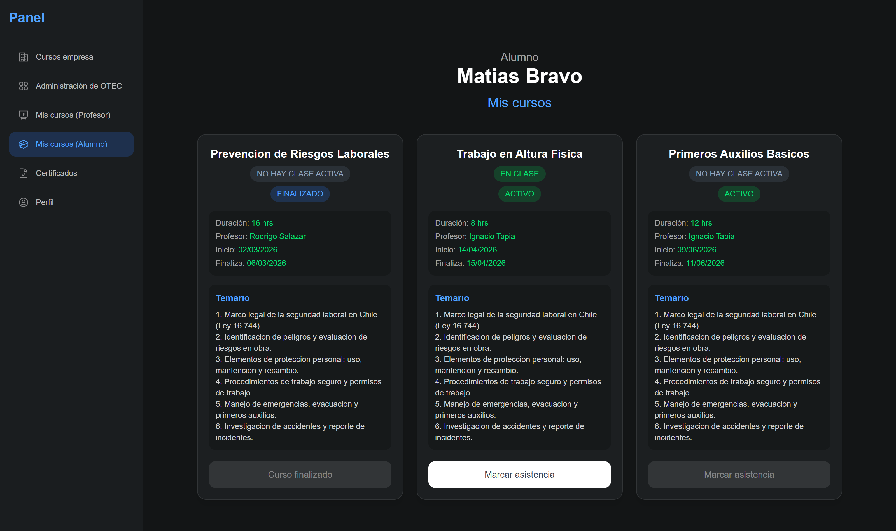
El certificado es una página web que la aplicación arma en el momento con los datos del curso armado y de la inscripción. Su dirección es pública y está formada por dos identificadores: el del alumno y el del curso armado. Los dos son UUID generados por la base de datos, por lo tanto la dirección se puede abrir sin cuenta, pero no se puede deducir.
La página muestra el certificado solo si el curso armado está en estado
FINALIZADO y si la inscripción alcanza las dos notas mínimas de
aprobación; en cualquier otro caso responde que el certificado no está disponible. Como los
datos se leen en el momento de abrir la página, la corrección de una nota queda reflejada en el
certificado.
El certificado contiene el número correlativo, el nombre y el RUT del alumno, el nombre del curso, las fechas de realización, el porcentaje de asistencia, la nota práctica, la nota teórica, el resumen del temario, la firma y la especialidad del certificador, y un código QR con la dirección de esa misma página. El reverso contiene el temario completo del curso y la firma del relator.
El PDF lo genera el servidor: abre la misma dirección con Puppeteer, espera a que terminen de cargar las imágenes e imprime la página en A4 horizontal. La aplicación tiene dos diseños de certificado y usa el que corresponde a la OTEC del curso armado. La página también tiene un botón Modo oscuro, que permite cambiar el certificado a fondo negro.
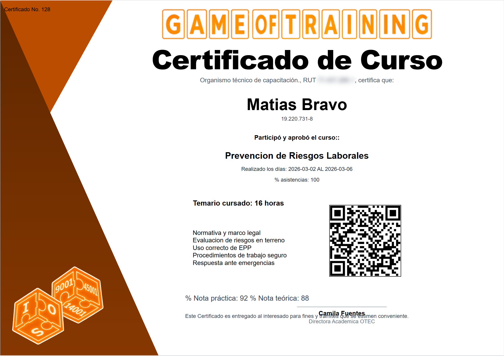
Las OTEC pueden armar sus propias encuestas desde el panel. Las preguntas pueden ser de tipo Texto, que se responde en un campo libre, o de tipo Rango, que se responde eligiendo un número dentro de un intervalo, y se pueden marcar como obligatorias o no.
Hay dos encuestas: la encuesta del estudiante, que responde el alumno inscrito, y la encuesta del cliente, que responde el usuario de contacto de la empresa. Las dos se pueden enviar por correo desde el apartado Acciones del curso del curso armado.
Las encuestas se pueden responder desde un enlace público, sin cuenta. Si el enlace se vuelve a abrir después de haber respondido, la página indica que la encuesta ya fue respondida. Las respuestas aparecen en el apartado Registros del curso.
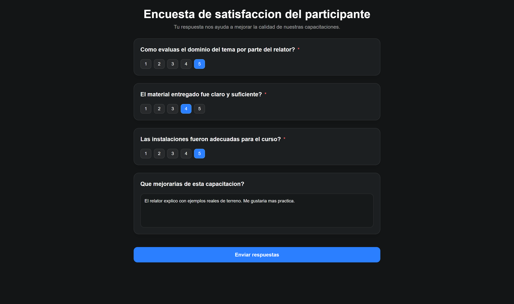
Usé Socket.IO para que los cambios se puedan ver en todas las pantallas abiertas sin recargar la página. Cuando un usuario crea, edita o elimina un usuario, una empresa, un curso, un curso armado, una inscripción o los parámetros, el resto de los usuarios conectados a esa OTEC recibe el aviso y vuelve a cargar los datos afectados.
Las OTEC son salas distintas del servidor, de manera que los avisos de una no pueden llegar a las demás. La parte superior del panel muestra los correos de los usuarios conectados a esa OTEC en ese momento.
La página del certificado se suscribe a los avisos de su curso armado: si una nota cambia mientras la página está abierta, el certificado se vuelve a armar.
La aplicación son dos proyectos separados, los dos escritos en TypeScript: el frontend y el backend.
React 19 con Vite y Tailwind CSS 4. React Router para las rutas, Zustand para guardar la OTEC seleccionada, Socket.IO para el tiempo real y SheetJS para leer los archivos Excel en el navegador.
NestJS 11 con PostgreSQL y TypeORM. JWT y Passport para la autenticación, bcrypt para las contraseñas, Socket.IO para los avisos, un almacenamiento compatible con S3 para las imágenes y la API de Gmail para los correos.
Docxtemplater rellena la plantilla .docx de la cotización y
LibreOffice la convierte a PDF. Puppeteer genera el PDF del certificado a partir de la
misma página que abre el alumno.
Las rutas del backend solo se pueden usar con sesión iniciada, y las públicas se marcan de forma explícita una por una. Además de la sesión hay un control de roles por OTEC, que lee la OTEC activa de una cabecera de la petición, y otro que impide editar el perfil de otro usuario.
Los datos que llegan al servidor se validan antes de guardarse y los mensajes de error se devuelven en español.
Los registros tienen su identificador interno en la base de datos y, además, un número propio dentro de su OTEC que empieza en 1. Ese segundo número es el que muestran las tarjetas y las tablas del panel.